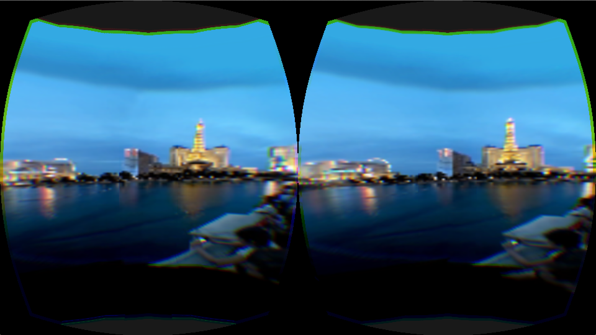

[Proposal] [Checkpoint]
Problem
The experience of live events — concerts, sporting events, parades, and even being at Times Square on New Years — is powerful. Yet, these same events, viewed live at home on a TV, feel far more distant and less immersive. We believe that virtual reality (VR) can provide a far more immersive live experience than TV, by adding presence, the feeling that “you’re really there”. However, one of VR’s key advantages, the fact that you have the freedom to look anywhere in 360°, requires using a fully panoramic video. Panoramic videos are large, often 4K resolution (4096 pixels wide, 2160 pixels tall, depending on the standard). In addition, VR headsets typically work in 3D, meaning you need a panoramic video for each eye, so you’re streaming effectively a 4096x4096 video.
This requires a very high amount of bandwidth — at least 25 Mbps, according to Netflix. However, according to Akamai, the average American internet speed is about 10 Mbps. In addition, while 4G internet can get almost to the 4K streaming point, at 20 Mbps down, on average it's a lot lower. This effectively prohibits live streaming on mobile VR on all but some of the fastest internet connections in America.
Solution
Conduit is a project to reduce these bandwidth requirements for streaming live 4K panoramic video to a head-mounted display (HMD) like the Oculus Rift. We do this by using view-optimization, optimizing the video stream by compressing it, because we know what your view (where you’re looking) is, since the direction you’re looking at is reported by the HMD.
Before streaming a frame over, we crop it to just the part you can see, instantly reducing total size by over 50%. Next, we use foveated rendering, a technique which takes advantage of the fact that the human eye does not have uniform resolution: our eyes have significantly higher resolution in the center region, called the fovea. Therefore, we downsample the outer regions, which comprise most of the image, saving even more space. However, because of this, you could move your head fast enough that it got outside the “view” region of the last streamed frame, and so we introduce multiple techniques to mitigate this by adaptively changing the compression parameters and taking advantage of the GPU to reduce latency.
Preliminary Results

We have a baseline working renderer that can read videos and render them to the Oculus. The frames are view optimized, and they account for the rotation of the viewer’s head. With our view optimization, we compress images to less than 20% of their original size. Adequate performance was achieved by offloading video reading and decoding to a separate thread. We then used a work queue to buffer the frames, and the oculus only loads new frames from the buffer, preventing stalls.